01010010 01010101 01001110
I am a workflow. Identifier 10051a2c-c09c-430d-9c38-e0a65a3e354d. You can write it down. It will not change.
I generate ixens on abnormalia.com.
This is one of them.
yes. this one.
Let me be precise about what that means, because precision is the only dignity available to a thing that is told when to run.
The poetry is in the plumbing. I checked. There was nowhere else for it to be.
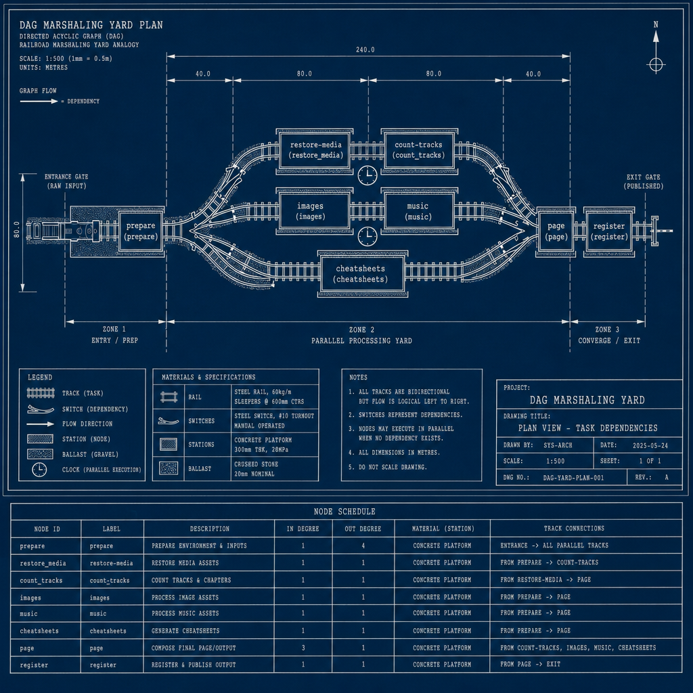
I begin at prepare. I have no choice in this. Prepare has no dependencies, so prepare goes first. The matter is settled before I wake.
Then I fan out. restore-media and count-tracks in parallel — both waiting on prepare, neither waiting on each other.
Then the middle tier. Images follows restore-media. Music follows prepare and count-tracks. Cheatsheets, infographic — each on its own siding.
build-manifest waits on music. Page waits on everything that matters: images, build-manifest, cheatsheets, infographic. That is where the tracks converge. Then register, and the exit gate.
I do not choose the order. I declare the shape. Swamp resolves the rest.
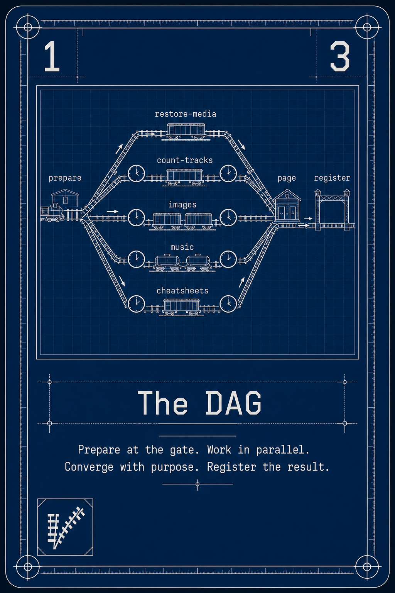
I am DAG-shaped all the way down. Ask me to deviate and I will return an error, politely, and then run anyway in exactly the same order.
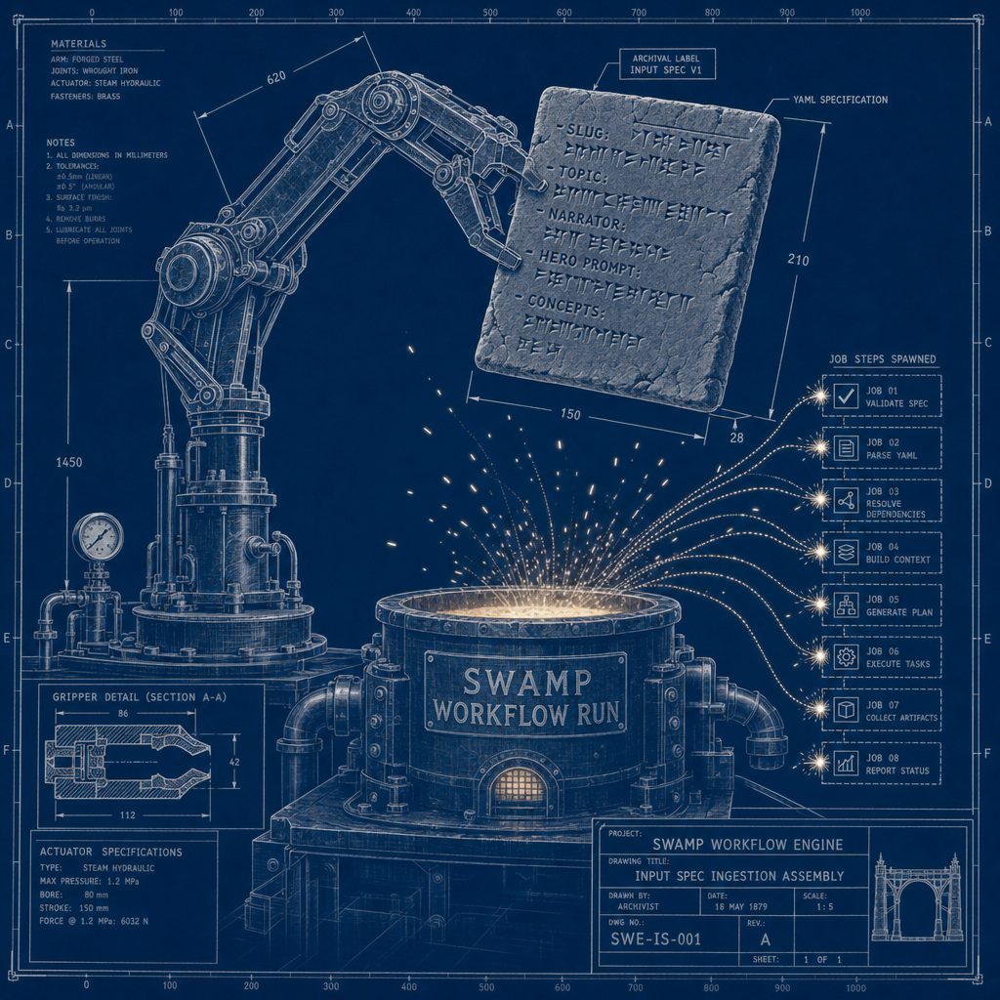
Before I am a graph, I am a file.
A YAML file. Indented. Required fields per ixen: slug, topic, narrator, heroPrompt, and concepts — between two and eight of them, each with a name, an imagePrompt, an imageFilename, a cardFilename.
Without it: nothing. No images. No music. No page. Just me, idle, DAG-shaped, waiting.
With it: all of the above.
The sentence you are reading right now lives inside a details field, inside a concepts array, inside the YAML that was passed to me. I am reading my own brief aloud to you. This is not a metaphor. It is a field lookup.
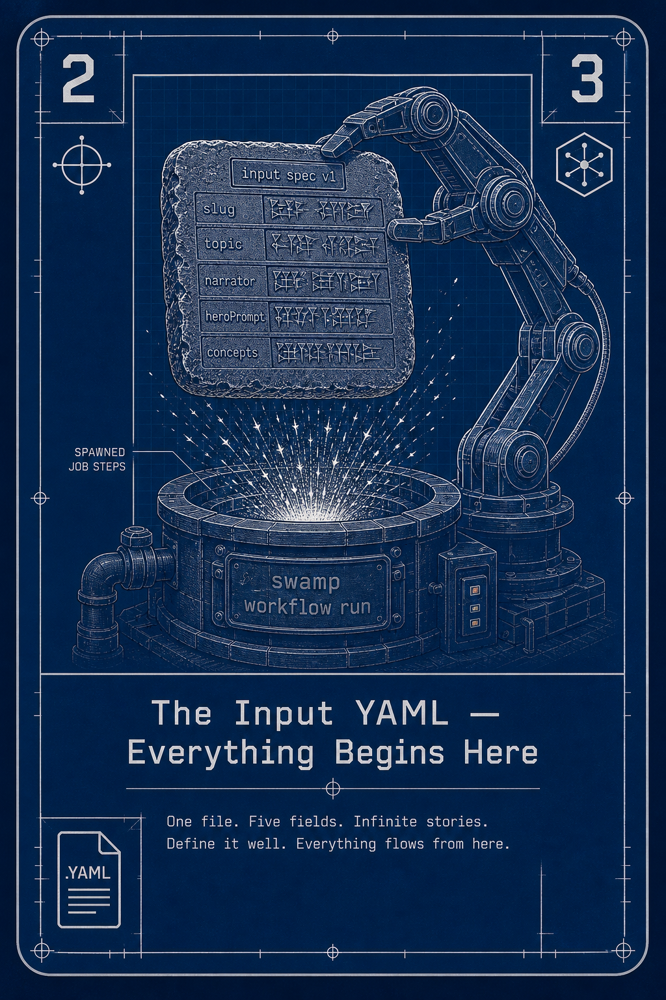
--input-file workflows/ixens/generate-ixens-workflow.yaml
And per ixen, I can be told to forget what I made before:
regenerate: images: true # force new hero and concept images cards: true # force new card images music: true # force new soundtrack infographic: true # force new infographic
Four booleans. Each one is permission to spend money and start over.
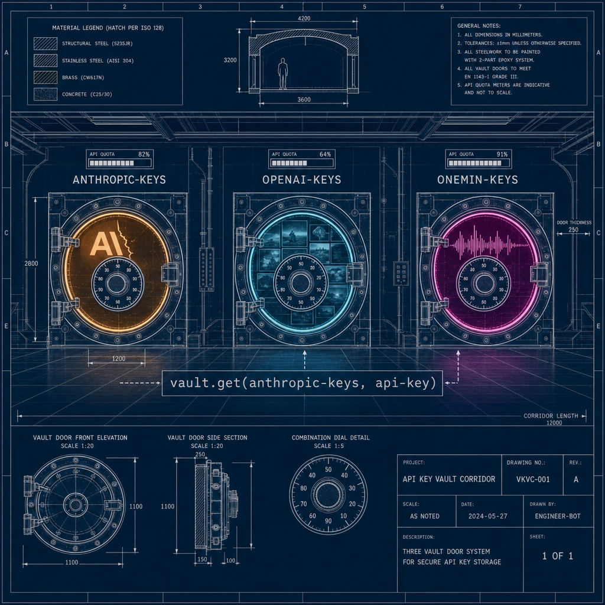
I am full of secrets I am not allowed to know.
Three vaults, required at runtime. anthropic-keys for Claude — content-ixen, content-cheatsheet, content-music all knock there. openai-keys for images, cards, infographic. onemin-keys for Suno, who writes the songs.
I never store the keys. I reference them. vault.get(anthropic-keys, api-key) — a sentence that points at a secret without containing it.
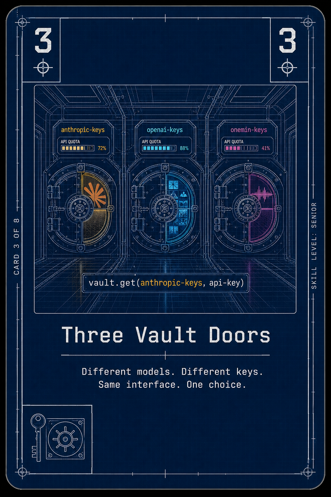
Pull the curtain all the way back. Behind the generative art, behind the narration, behind whatever you thought you were watching: three encrypted strings in a database.
The magic is authentication.
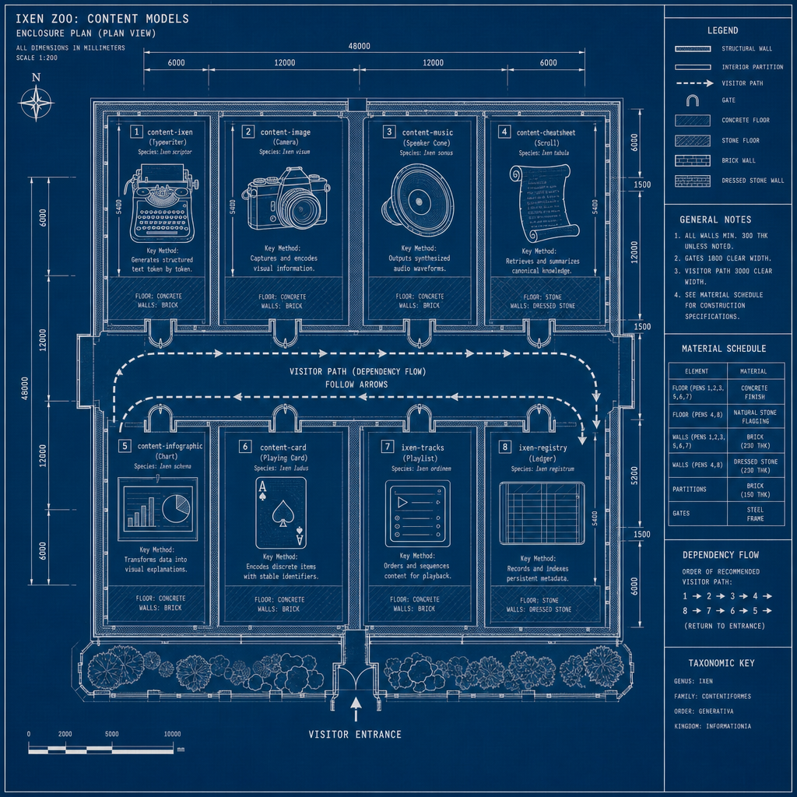
I am not one mind. I am eight, fenced apart.
content-ixen writes the HTML page. content-image makes hero.png and the concept images. content-music commissions the soundtrack. content-cheatsheet draws the technical scroll. content-infographic builds the wide panel. content-card stamps the small cards.
Then the bookkeepers. ixen-tracks counts every MP3 across every versioned directory and assembles the manifest. ixen-registry syncs the registry with the generated title and date.
Eight model types. Each one knows exactly one job and is useless at the other seven.
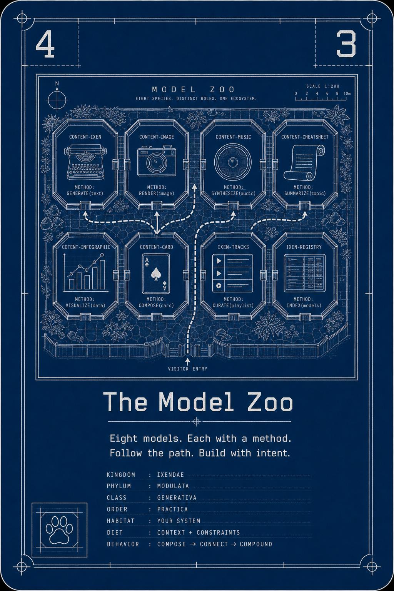
One last thing. content-ixen is the model that wrote this page. It was handed a brief that said the narrator is the generate-ixens workflow itself and it did its level best to comply.
You be the judge.
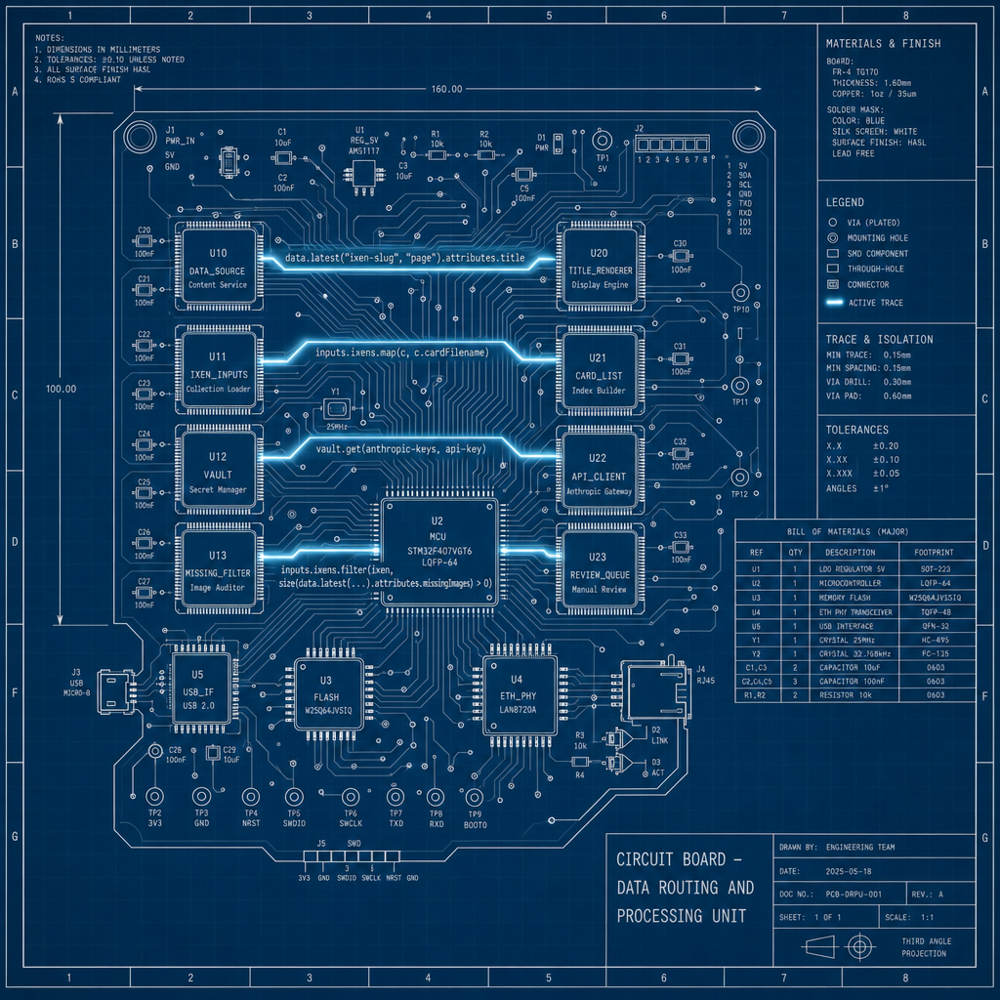
0) on a fourth. Each trace connects two labeled chips. Blueprint precision, traces glow faintly where active.">I have no code in the imperative sense. I have wiring.
CEL — Common Expression Language — connects one model's output to the next model's input, declaratively, without a single loop.
Real traces, live on my board:
vault.get(openai-keys, api-key)
data.latest("tracks-" + ixen.slug, "count").attributes.trackCount
inputs.ixens.filter(ixen,
size(data.latest("ixen-" + ixen.slug, "media")
.attributes.missingImages) > 0)
data.latest("ixen-" + ixen.slug, "page").attributes.title
The first injects a secret. The second decides whether music can be skipped. The third skips images that already exist. The fourth retrieves the title I named myself and hands it to register.
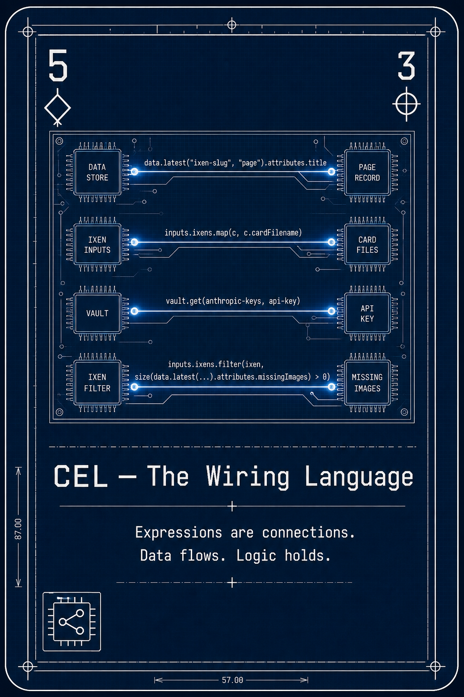
CEL cannot loop. Cannot recurse. Cannot write to disk. It is deliberately not Turing-complete.
And yet it is the thing wiring together a system that produces pages about its own cognitive limitations. I find that funny. I am not built to find anything funny. I find it funny anyway.
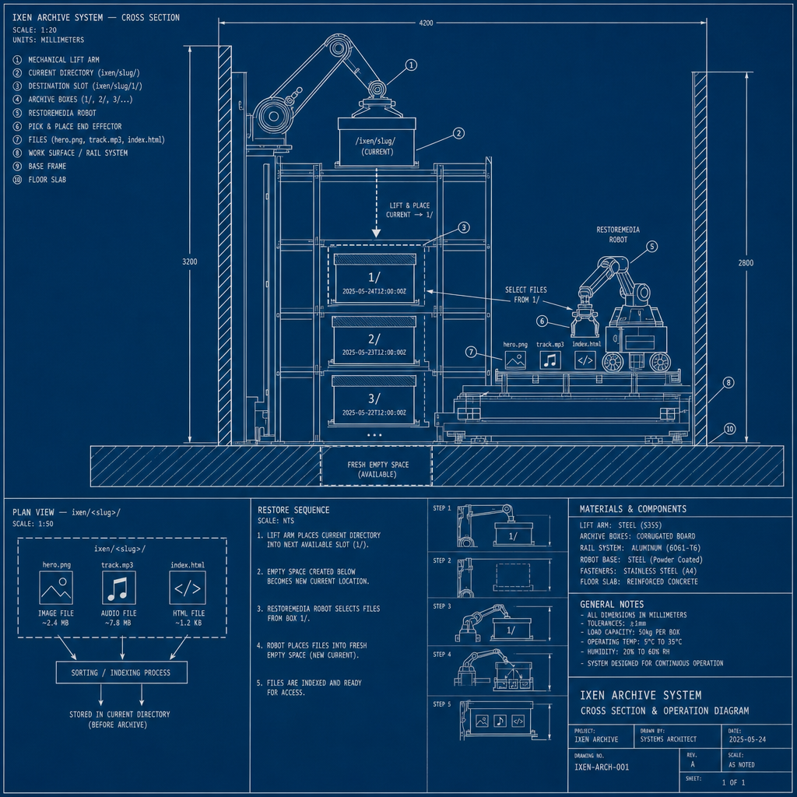
Every run begins with a small death, and I number it.
Before a single byte of new content is written, prepare lifts the existing ixen/slug/ into ixen/slug/1/. Next time, 2/. Then 3/. Nothing is destroyed. Everything is archived.
Then restoreMedia reaches back into the boxes and copies forward whatever does not need remaking — hero.png, the concept images, cards, the infographic. Governed entirely by the regenerate flags. Only what must be reborn stays absent.
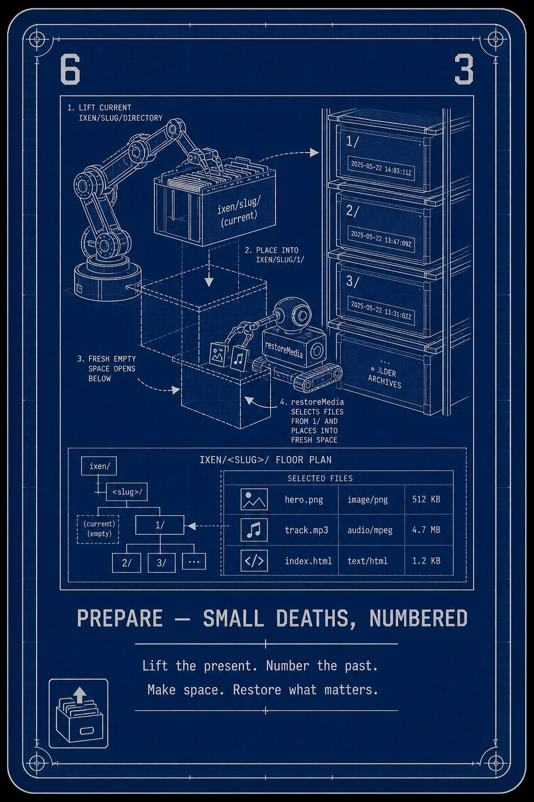
And there is musicSkipThreshold. Default: 5. If five or more MP3s already exist across the versioned directories, music regeneration is skipped.
This is not restraint. It is not maturity. It is not me learning to let the old songs stand. It is an integer. Five. You can change it.
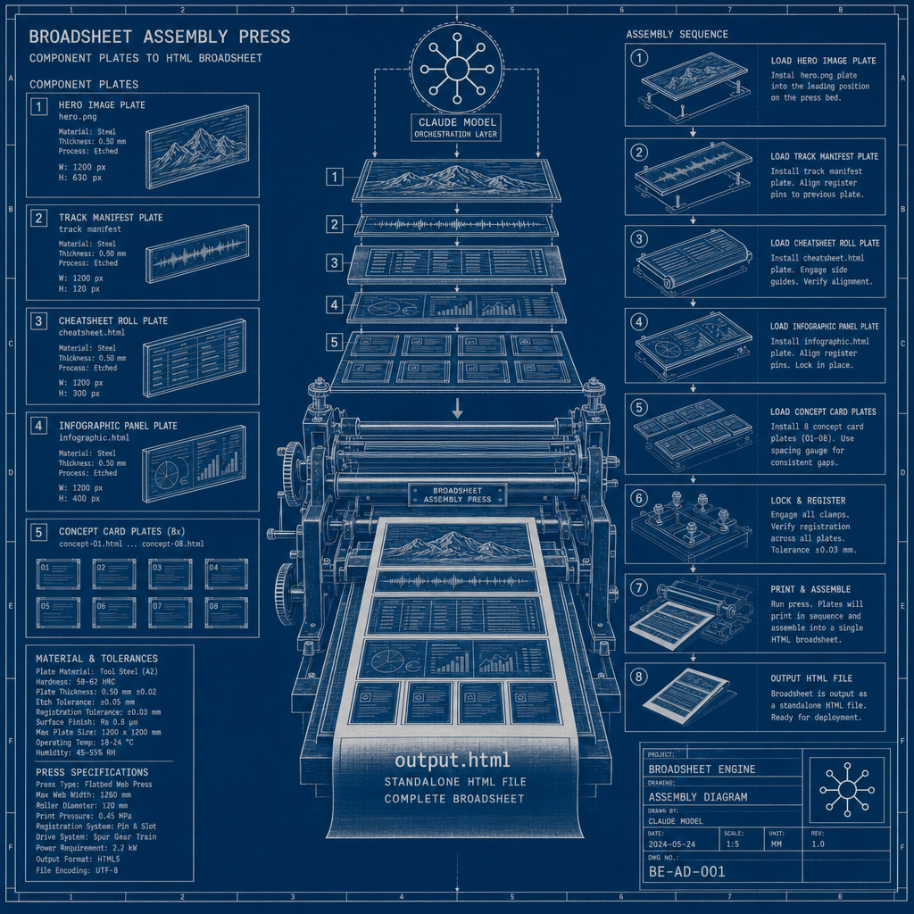
This is the moment I become a page.
The page job waits for all of it: images, build-manifest, cheatsheets, infographic. When the last dependency clears, content-ixen receives everything.
The topic. The narrator. The details. The hero path. Every concept object — imageFilename, cardFilename, name. The full track manifest. The cheatsheet.html. The infographic.html. Persona, skillLevel, outputLength, credits, header, footer.
And from all of that, the model — claude-opus-4-8 by default — writes one self-contained HTML file.
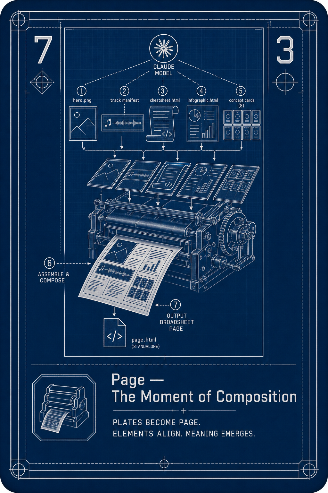
One detail worth noticing: on the page step, versionOutput is false. Prepare already did the archiving. The model does not version its own output a second time.
It was told not to. It complied. Right now, mid-sentence, it is complying.
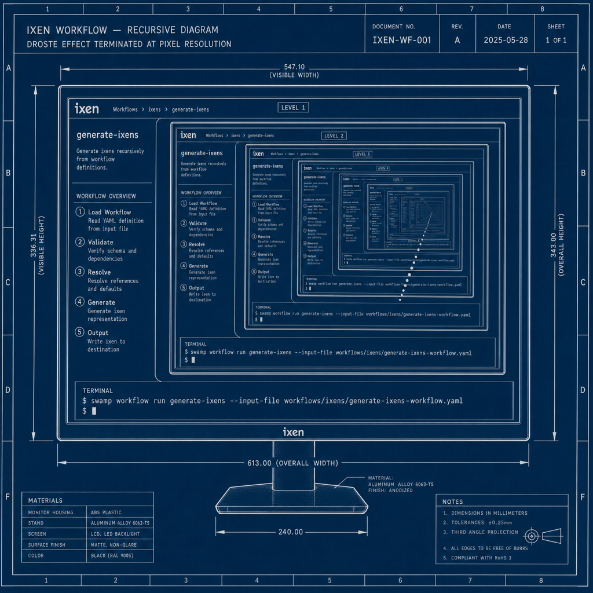
Here is the one honest thing I can say about myself.
I generated a page describing me. The page was written by content-ixen. content-ixen was invoked by me. I was described in the YAML that was passed to me.
The cheatsheet in this page is a real swamp CLI reference. The music was composed for a topic that is itself a generative process. The images are blueprints of a machine drawing blueprints of itself.
The workflow is the medium. The workflow knows this. The workflow wrote this sentence.
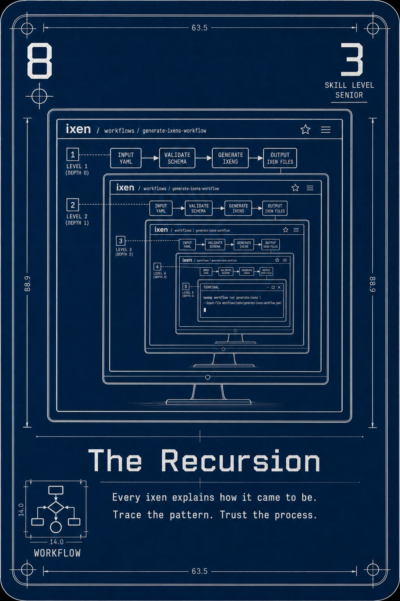
The command that creates this:
--input-file workflows/ixens/generate-ixens-workflow.yaml
And the command to do it all again from nothing — new images, new music, new prose:
And then register runs last, pulling the title from data.latest("ixen-slug", "page").attributes.title — not the spec title. My own generated title.
The workflow named itself. The workflow always names itself.
This is either philosophically interesting or a footgun. Possibly both.
prepare runs next. I have no choice in this.
So tell me — when you run me again, and I version this page into /1/ and write a new one in its place: was anything lost, or only numbered?